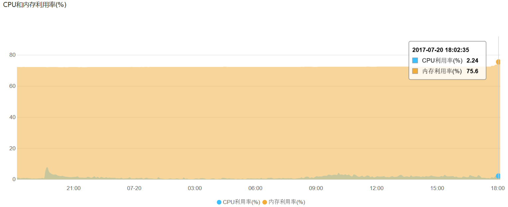
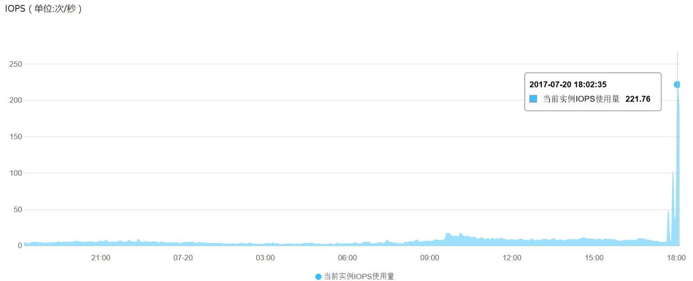

DTS工具进行公有云和金融云之间RDS数据迁移和实时同步测试记录
DTS为了提高传输效率，是采用多线程传输的，因为数据迁移与网络、任务队列、数据量等因素有关，具体需要的时间无法估计。
2017-07-15 BoobooWei
[TOC]
测试账号信息
| RSD实例 | 云类型 | 所在可用区 | 网络类型 | 数据库类型 | 账号ID | db_name |
|---|---|---|---|---|---|---|
| 目标实例 | 金融云 | 华东2（上海） | VPC | MySQL 5.6 | 1437423208539296 | test2017 |
| 源实例 | 公共云 | 华东1（杭州） | 经典网络 | MySQL 5.6 | 1822883072502788 | booboo |
| DTS功能 | 角色名 | 基本信息 | 精确授权 |
|---|---|---|---|
| 实时同步 | booboo | "Service": ["1437423208539296@dts.aliyuncs.com"] |
AliyunDTSRolePolicy |
| 数据迁移 | booboo | "Service": ["1437423208539296@dts.aliyuncs.com"] |
AliyunDTSRolePolicy |
测试方案一DTS实时同步
通过DTS实时同步功能实现公共云与金融云间的RDS数据迁移
优势
对于RDS实例间的数据同步，通过私网同步（私网比外网同步快）
同步时间较其他方法较短
缺点
- DTS实时同步不兼容触发器
- 如果有触发器，需要同时使用DTS 数据迁移功能
- DTS 数据迁移服务只选择结构迁移
- 目标实例删除触发器
- DTS实时同步服务只选择全量数据初始化
- 同步成功后停服务插入触发器
解决思路
不存在触发器的情况
迁移原理

迁移步骤
| 不存在触发器 | 描述 | 服务可用性 | 时间预估 | 注意事项 |
|---|---|---|---|---|
| 第一步 | 通过DTS实现公共云与金融云间RDS实时同步 | 可用 | 一般情况下，大概100G需要2-3小时 | 不兼容触发器 |
| 第二步 | 停止对源rds的写操作，保证源和目标rds数据一致 | 不可用 | ||
| 第三步 | 测试目标 | 不可用 | ||
| 第四步 | 库切换客户端程序使用的数据库 | 不可用 | ||
| 第五步 | 正式使用 | 可用 |
存在触发器的情况
迁移原理

迁移步骤
| 存在触发器 | 描述 | 服务可用性 | 时间预估 | 注意事项 |
|---|---|---|---|---|
| 第一步 | 备份触发器 | 可用 | ||
| 第二步 | 通过DTS实现结构迁移后停止并释放DTS结构迁移任务 | 可用 | 结构迁移 | |
| 第三步 | 删除目标rds中的触发器 | 可用 | 一般情况下，大概100G需要2-3小时 | |
| 第四步 | 通过DTS实现公共云与金融云间RDS实时同步 | 可用 | 全量数据初始化 | |
| 第五步 | 停止对源rds的写操作，保证源和目标rds数据一致 | 不可用 | ||
| 第六步 | 停止并释放DTS同步任务 | 不可用 | ||
| 第七步 | 目标rds添加触发器 | 不可用 | ||
| 第八步 | 测试目标库 | 不可用 | ||
| 第九步 | 切换客户端程序使用的数据库 | 不可用 | ||
| 第十步 | 正式使用 | 可用 |
存在触发器的具体操作步骤
第一步 备份触发器脚本
delimiter // |
若脚本没了，可以通过show create trigger xxx;来获取。
第二步 通过DTS实现结构迁移
- 购买数据迁移链路
- 迁移实例连接信息
| 迁移实例连接信息（源） | 信息填写 | 备注 |
|---|---|---|
| 任务名称 | 公有云华东1到金融云华东2rds同步任务 | 迁移作业名称自定义 |
| 实例类型 | RDS实例 | 源实例为同步作业的源实例类型，目前只支持RDS For MySQL. |
| 实例地区 | 华东1 | 源地域为同步链路源实例所在地域。 |
| RDS实例ID | 其他阿里云账号下的RDS实例 |
垮公共云和经融云，选择其他阿里云账号下的RDS实例 |
| RDS实例所属阿里云账号 | 1822883072502788 | 源RDS实例所属阿里云账号的账号ID，账号管理的安全设置界面获取。 |
| 角色名称 | booboo | 源RDS实例所属云账号授权的角色，具体创建看帮助 |
| 实例地区 | 华东1（可以下拉框选择） | 源RDS实例地区 |
| RDS实例ID | rm-xxx（可以下拉框选择） | 源RDS实例ID |
| 数据库账号 | zyadmin | 源RDS实例数据库账号 |
| 数据库密码 | Uploo00king | 源RDS实例数据库密码 |
| 迁移实例连接信息（目标） | 信息填写 | 备注 |
|---|---|---|
| 实例类型 | RDS实例 | 目前支持RDS For MySQL, MaxCompute, DataHub |
| 实例地区 | 华东2 | 目标实例所在地域 |
| RDS实例ID | 1437423208539296 | 目标RDS实例ID |
| 数据库账号 | booboo | 目标RDS实例数据库账号 |
| 数据库密码 | Uploo00king | 目标RDS实例数据库密码 |


- 授权rds实例白名单
- 选择同步对象
- 预检查
- 启动迁移任务，开始结构对象的迁移。
第三步 删除目标rds中的触发器
进入目标实例的DMS，执行一下SQL
drop trigger trigger_name; |
第四步 通过DTS实现公共云与金融云间RDS实时同步
当目标实例中的触发器删除掉之后，可以开始创建同步链路。因为结构已经迁移过去了，所以同步初始化只选择全量数据初始化。
- 创建同步链路
进入数据同步界面，点击右上角“创建同步作业” 购买同步链路。链路购买完成后，返回DTS控制台，点击链路右侧的 配置同步链路，开始链路配置。
配置实例信息。
在这个步骤中，主要配置迁移任务名称，迁移源实例及目标实例连接信息。其中：
任务名称
默认情况下，DTS为每个任务自动生成一个任务名称。任务名称没有唯一性要求，您可以修改这个名称，为任务配置一个具有业务意义的名称，便于后续的任务识别。
源实例连接信息
- 实例类型：选择 RDS实例
- RDS实例ID：配置RDS实例的实例ID
- 数据库账号：RDS实例访问账号
- 数据库密码：上面RDS访问账号对应的密码
目标实例连接信息
- 实例类型：选择 RDS实例
- RDS实例ID：配置RDS实例的实例ID
- 数据库账号：RDS实例访问账号
- 数据库密码：上面RDS访问账号对应的密码
选择同步对象。
同步初始化。
注意，这里面同步初始化只勾选全量数据初始化，不进行结构初始化，因为上面的结构迁移已经将同步对象的结构定义迁移到目标RDS实例了。预检查。 当预检查成功后即可启动同步任务。
至此完成整个同步链路的配置。


第五步 停止对源rds的写操作
准备好触发器脚本
RDS是不能对系统库进行更改类的操作，所以无法使用导出的备份（select * from infomation_schema.triggers;）进行恢复。可以使用存储过程脚本再执行一遍
停止对源rds的写操作
进入目标RDS的控制台，执行存储过程脚本
第六步 停止并释放DTS同步任务
第七步 目标rds添加触发器
第八步 测试目标库
第九步 切换客户端程序使用的数据库
第十步 正式使用
存在触发器却直接使用DTS实时同步测试
最终会发现，源库和目标库数据不一致。
源RDS实例数据库中的表和触发器的创建 |
测试并发同步的速率
目标和源RDS实例的硬件配置情况
| RDS | cpu | 内存 | 磁盘 | IOPS |
|---|---|---|---|---|
| 目标实例金融云 | 1核 | 1G | 5G | 600 |
| 源实例公有云rds1 | 1核 | 1G | 5G | 600 |
| 源实例公有云rds2 | 1核 | 1G | 5G | 600 |
| 源实例公有云rds3 | 1核 | 1G | 5G | 600 |
源RDS实例的数据量和同步速率情况
| RDS | db_name | db_size | 结构同步 | 全量同步 | 增量同步 |
|---|---|---|---|---|---|
| rds1 | usertb | 341.83M | 16min25s | ||
| rds2 | t1 | 415.91M | 17min35s | ||
| rds3 | t2 | 42M | 4min30s |
同步速率情况总结
在目标实例和源实例都是最小配置的情况下（1核\1G\5G\600IOPS）
| RDS | 数据量 | 全量同步 | 速度 |
|---|---|---|---|
| rds1 | 341.83M | 16min25s | 1.2G/h |
| rds2 | 415.91M | 17min35s | 1.3G/h |
| rds3 | 42M | 4min30s | 0.5G/h |
阿里官方给到的参考速率为30~50G/h
阿里最好配置为60核\470G\3000G\120000IOPS
测试数据脚本
源rds1 |
测试方案二全备份+DTS增量迁移
阿里云金融云新建ecs网络类型为专有网络失败，阿里云自己的前端开发的问题。
该方案需要新建ecs自建mysql做中转，复杂且不安全，因此不再考虑。
官方文档参考
数据同步
公共云与金融云间的数据迁移
跨阿里云账号RDS实时同步
触发器存在情况下如何配置同步作业
使用DTS实现跨阿里云账号的 RDS 实例迁移